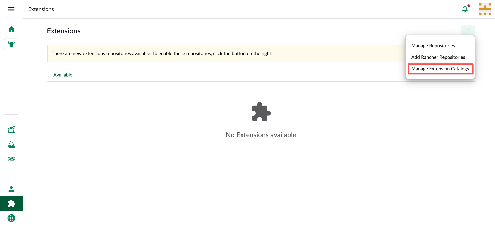
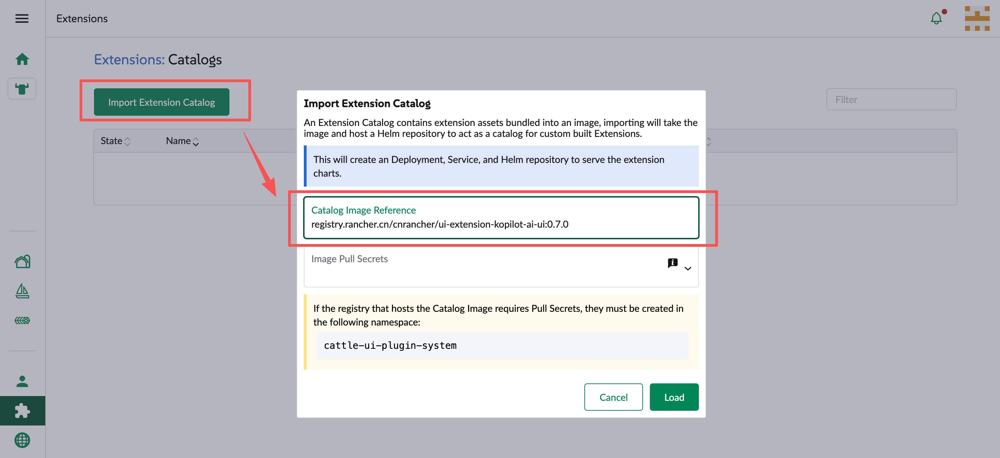
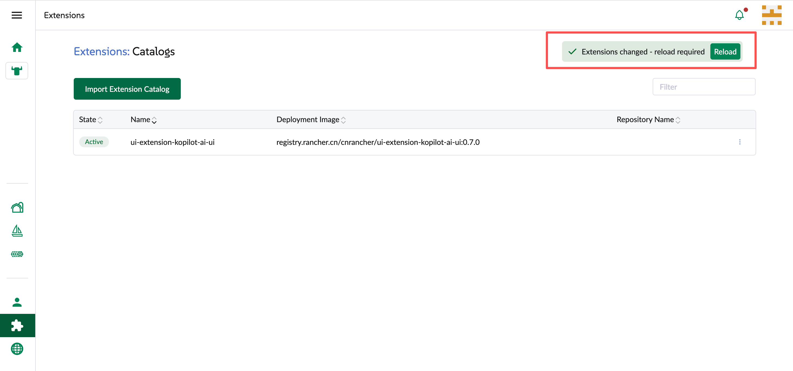
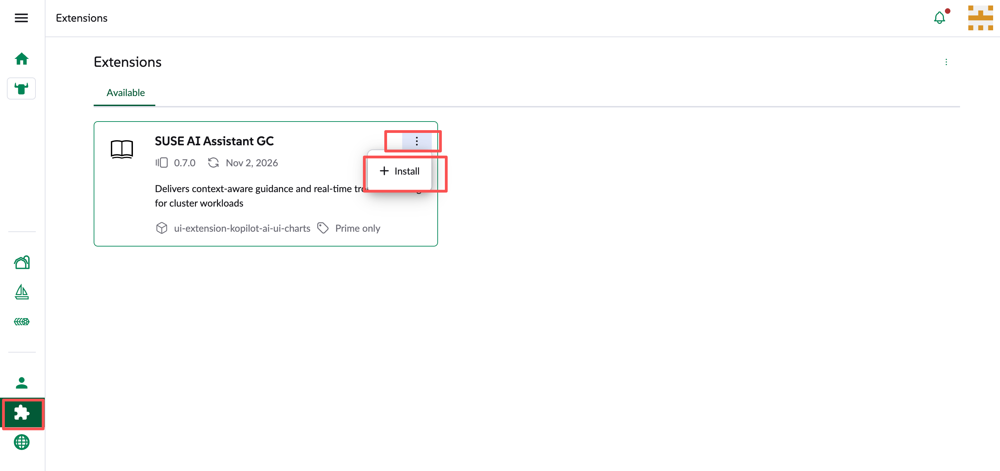
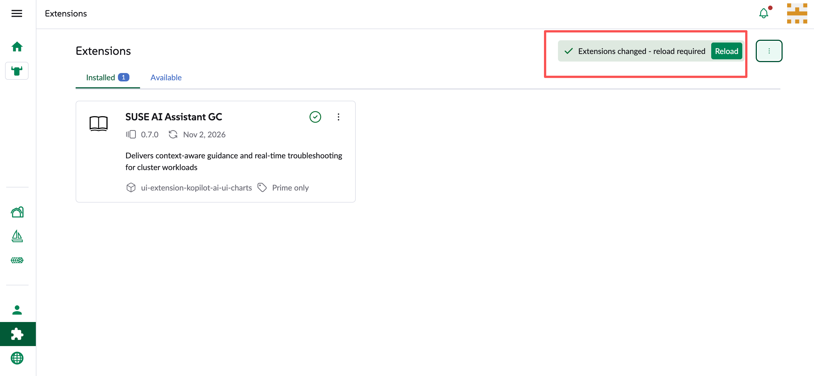

快速入门
LizGC 目前有两种安装方式，请按需选择其中一种：
-
集成到 Rancher UI：需要与 Rancher 集成时使用。
-
使用独立 UI：只使用 LizGC 功能、不需要与 Rancher 集成时使用。
两种方式的安装步骤只在最后一步 安装 LizGC 时，使用的 Helm 参数不同。
先决条件
开始前请确认已满足以下条件：
-
可访问的 Kubernetes 集群
-
已安装 Helm
-
已准备可用的 LLM API Key
-
选择集成到 Rancher UI 时，需要 Rancher 2.13 或以上版本
支持模型矩阵
LizGC 当前支持的 LLM 厂商与模型请参考 已验证模型。安装时需提供对应厂商的 API Key。
安装 cert-manager
LizGC 可使用 cert-manager 签发和管理 TLS 证书。 若集群中已安装 cert-manager，可跳过本节，继续 下载 Helm Chart。
helm repo add jetstack https://charts.jetstack.io
helm install cert-manager jetstack/cert-manager \
--namespace cert-manager \
--create-namespace --set crds.enabled=true下载 Helm Chart
从 GitHub Release Assets 下载 Helm Chart：kopilot-0.7.0.tgz 和 kopilot-crd-0.7.0.tgz。
安装 local-path-provisioner
安装 local-path-provisioner 作为 StorageClass 提供者（也可使用其他 provisioner）。
kubectl apply -f https://raw.githubusercontent.com/rancher/local-path-provisioner/v0.0.36/deploy/local-path-storage.yaml
kubectl patch storageclass local-path -p '{"metadata": {"annotations":{"storageclass.kubernetes.io/is-default-class":"true"}}}'安装 LizGC 的 CRD
helm upgrade --install \
-n kopilot-system \
--create-namespace \
kopilot-crd ./kopilot-crd-0.7.0.tgz安装 LizGC
| 安装方式 | 适用场景 | 追加的参数 |
|---|---|---|
集成到 Rancher UI |
与 Rancher 集成 |
|
使用独立 UI |
只使用 LizGC |
|
集成到 Rancher UI
需要与 Rancher 集成时，使用下面的命令安装。rancher_sso.url 填写 Rancher Server 地址，例如 https://rancher.mycompany.com。
helm upgrade --install \
-n kopilot-system \
--create-namespace \
--set bootstrapPassword="<your bootstrap password>" \
--set llm.active=gemini \
--set llm.provider=google_genai \
--set llm.apiKey="<your llm api key>" \
--set rancher_sso.enabled=true \
--set rancher_sso.url="<your rancher url>" \
kopilot ./kopilot-0.7.0.tgz安装完成后，继续 安装 Rancher UI Extension。
使用独立 UI
只使用 LizGC 功能、不与 Rancher 集成时，使用下面的命令安装。hostname 是浏览器访问 LizGC 的域名。
helm upgrade --install \
-n kopilot-system \
--create-namespace \
--set bootstrapPassword="<your bootstrap password>" \
--set hostname="<your domain>" \
--set llm.active=gemini \
--set llm.provider=google_genai \
--set llm.apiKey="<your llm api key>" \
kopilot ./kopilot-0.7.0.tgz安装完成后，在浏览器打开 https://<your domain>，使用 bootstrapPassword 登录。具体使用请联系 SUSE 销售或售前人员。
|
这些说明中并没有包含其他安装选项。如果您想扩展其他配置，请参考完整的 LizGC 安装说明 |
安装 Rancher UI Extension
仅在选择 集成到 Rancher UI 时需要完成本节。在 Rancher 中启用 UI Extension 后，即可在 Rancher UI 中使用 LizGC。
-
打开 Rancher，点击左侧 Extensions 菜单，再点击下拉菜单中的 Manage Extension Catalogs，导入 LizGC UI 扩展。

-
点击 Import Extension Catalog，输入 Catalog Image Reference：
registry.rancher.cn/cnrancher/ui-extension-kopilot-ai-ui:0.7.0
-
等待扩展目录状态变为 Active 后，点击 Reload 重新加载页面。

-
在 Extensions 页面安装 SUSE AI Assistant GC，安装完成后点击 Reload 重新加载页面。


在 Rancher UI 中使用
用户权限
Rancher 中的用户想要使用 LizGC，需要设置正确的权限，具体请参考 控制访问（RBAC）